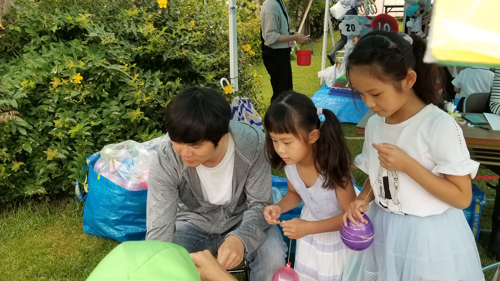

<!-- 仏向小学校のホームページもタイトルあるよ -->
<!-- https://www.edu.city.yokohama.lg.jp/school/es/bukko/index.cfm/1,html -->

<title>しえんちゃん</title>

<h1>しえんちゃんの</h1>
<!--<h2>しえんちゃんの</h2>-->
<h3 style="color: red">
    クイズ問題集
</h3>
<a href="quiz.html">もんだいしゅう①</a>
<a href="quiz 2.html">もんだいしゅう②</a>


<h3 style="color:red">スペシャル</h3>
<a href="novel_1.html">女の国の少女たち　第1集</a>

<hr>
<h3 style="color: red">好きなこと</h3>
かっこいいマネ、<br>
オシャレ、<br>
リカちゃん人形で遊ぶこと<br>
<hr>


<h3 style="color:purple">苦手なこと</h3>
怒られること<br>
褒められること<br>
ないしょ話<br>
<hr>


<h3>
    <span style="color:pink; background-color:brown">楽しかったこと</span>
</h3>
まつり



